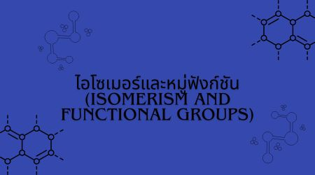

ไอโซเมอร์และหมู่ฟังก์ชัน (Isomerism and Functional Groups)
ไอโซเมอร์ (Isomer) คือสารที่มีสูตรโมเลกุลเหมือนกัน แต่มีโครงสร้างหรือการจัดเรียงอะตอมแตกต่างกัน
ไอโซเมอร์ที่มีโครงสร้างแตกต่างกันอาจมีสมบัติทางกายภาพและทางเคมีแตกต่างกัน แม้ว่าจะมีสูตรโมเลกุลเหมือนกัน
หมู่ฟังก์ชัน (Functional Group) คือกลุ่มอะตอมเฉพาะที่อยู่ในโมเลกุลของสารอินทรีย์ และเป็นส่วนสำคัญในการกำหนดสมบัติของสาร
การพิจารณาหมู่ฟังก์ชันช่วยให้สามารถจำแนกประเภทของสารอินทรีย์ และคาดการณ์สมบัติรวมถึงการเกิดปฏิกิริยาของสารได้
ดังนั้น การศึกษาไอโซเมอริซึมและหมู่ฟังก์ชันจึงมีความสำคัญต่อการทำความเข้าใจโครงสร้างและสมบัติของสารอินทรีย์